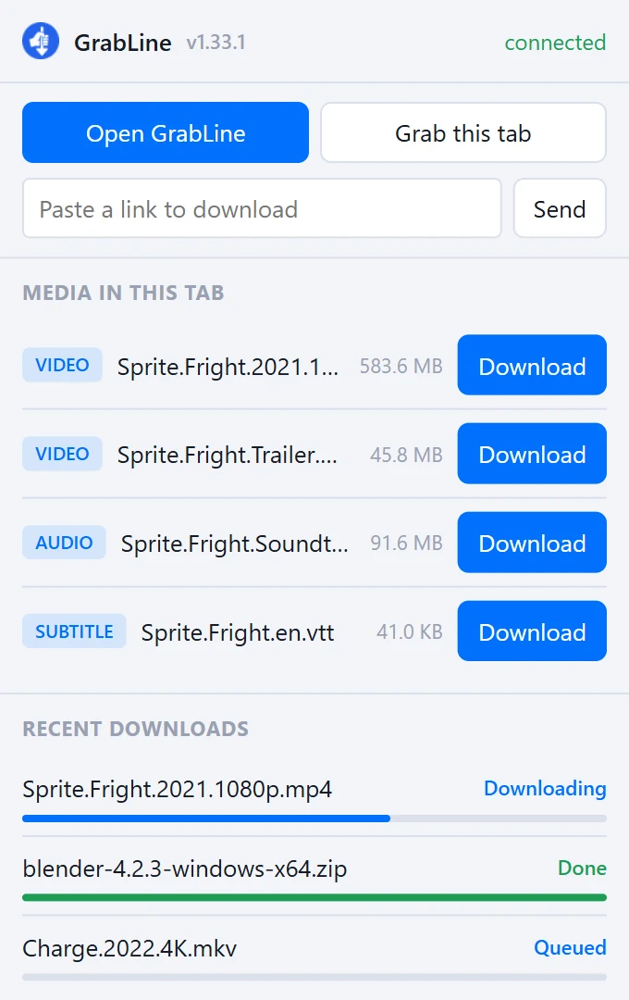

The download manager for your PC and your phone
Fast downloads, video, torrents and cloud on Windows, macOS, Linux and Android. Free and open source, with no ads and no account.


Windows, macOS and Linux. Android 8 and later. Firefox, Chrome, Edge and Brave.
Three apps that work together
Use one or all three. Each works on its own.
GrabLine for desktop
Windows, macOS and Linux
- Fast. Up to 32 connections per file, and downloads resume after a crash or restart.
- Video and audio. Pick the quality on more than 1000 sites, with subtitles and trimming.
- Torrents and cloud. Magnets, RSS and watch folders, plus SFTP, FTP, WebDAV and S3.
- Organised. Named queues, schedules, speed limits and a live dashboard.

GrabLine for Android
Android 8 and later, in 14 languages
- Share to download. Send a link from any app and choose the phone or your PC.
- The full set. Video, torrents and file servers work on the phone too.
- Your PC in your pocket. See, pause and start the PC's downloads from the phone.
- Handy. A home screen widget and a quick settings tile.


GrabLine Connect
For Firefox, Chrome, Edge and Brave, with the desktop app
- One click. A download button appears on videos, audio and links as you browse.
- Everything on the page. The popup lists the media it found in the tab.
- Takes over downloads. Your browser's downloads go to GrabLine, if you want.
- Stays local. It talks only to GrabLine on your computer.

Your phone and PCs in one list
Pair a phone or another PC once. Then each one shows the others' downloads and can control them.

- Open Devices on the PCClick Pair a phone or PC to show a code.
- Scan it with the phoneOr type the address and code by hand.
- DoneIt stays on your own Wi-Fi, encrypted, with no cloud in between.
Download GrabLine
Free, with nothing else to install.
Installer, or a portable zip that runs without admin rights.
AppImage for most distributions, DEB for Debian, Ubuntu and Mint, or a tar.gz.
GrabLine Connect for Firefox. Chrome, Edge and Brave connect from Browser Setup in the desktop app.
The desktop apps are not code signed yet, so your system asks once. On Windows choose More info, then Run anyway. On macOS, right click GrabLine and choose Open. When Windows asks about the firewall the first time you pair a phone, choose Allow. Install guide
Private by design
No ads and no account. Every feature is free.
No tracking. No usage data leaves your devices. Privacy policy
Your network only. Paired devices talk over your Wi-Fi, and nothing opens a port on your router.
No DRM removal. Netflix, Disney+, Spotify and similar services are not supported.
Free, and built in spare time. If it helps you, buy me a coffee or star it on GitHub.
Questions
Do I need the desktop app to use the phone app?
No. The Android app downloads on its own. Pairing it with a PC adds sending links between them and controlling the PC's downloads.
How do I connect my phone to my PC?
Put both on the same Wi-Fi. On the PC open Devices, click Pair a phone or PC and scan the code with the app. If scanning does not work, tap Enter the code by hand and type the address and code shown under the QR code.
Can I control downloads away from home?
Not yet. Devices only talk over your own network, so nothing is open to the internet.
Is there an iPhone app?
Not at the moment. GrabLine runs on Windows, macOS, Linux and Android.
How is it different from IDM?
Both split files into parallel connections and add a browser button. GrabLine is open source, runs on every desktop system and on Android, includes video, torrents and cloud, and sends no usage data.
Is it really free?
Yes. It is open source under AGPL 3.0 with no paid tier. The code for the desktop app and the Android app is on GitHub.